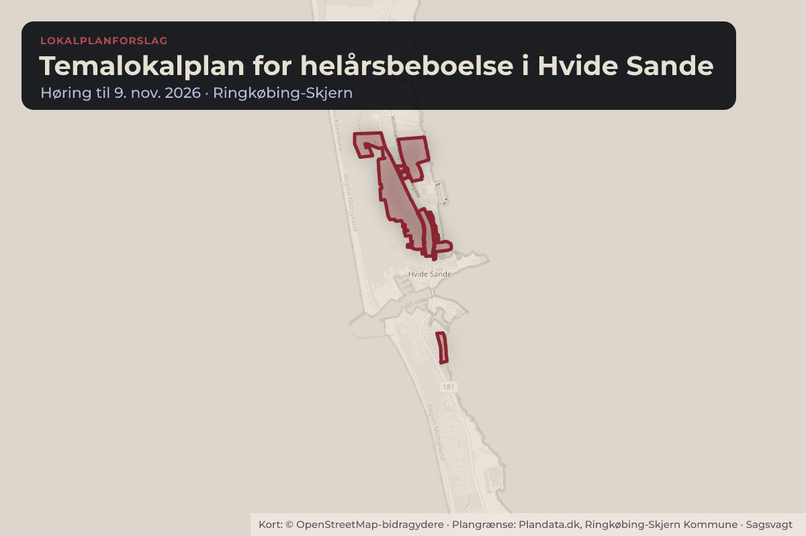
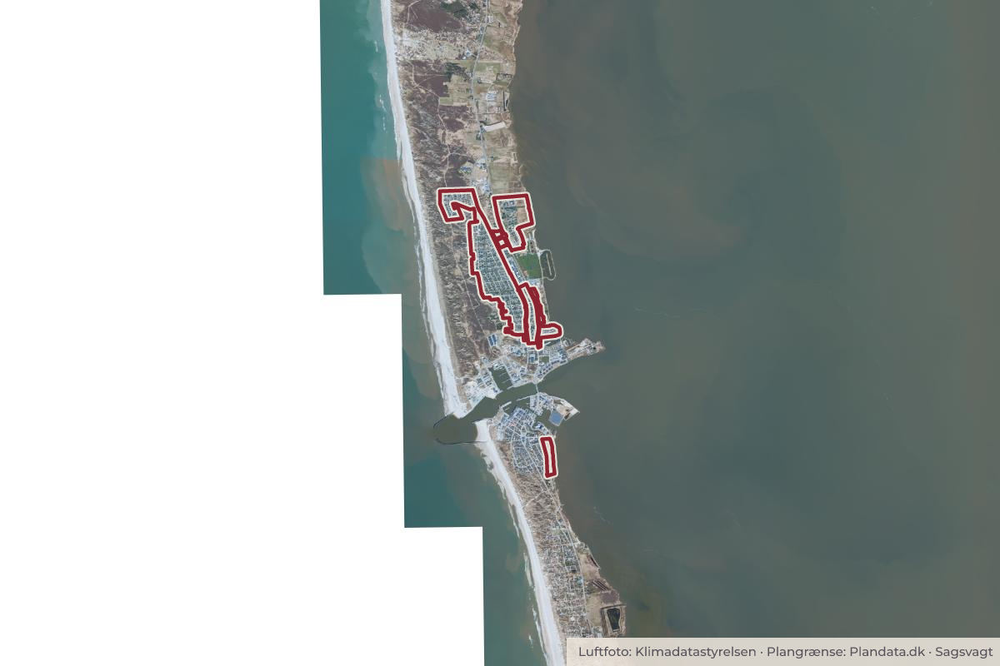

Besluttet 22. september, Plan- og Trafikudvalget, Ringkøbing-Skjern
Offentliggørelse af planforslag til Temalokalplan for helårsbeboelse i Hvide Sande
Administrationen indstiller, at Plan- og Trafikudvalget beslutter, at: • Forslag til Lokalplan nr. 521, Temalokalplan for helårsbeboelse i Hvide Sande vedtages og fremlægges i offentlig høring i 5 uger. • At der afholdes et borgermøde i løbet af høringsperioden.

Kort: © OpenStreetMap-bidragydere. Plangrænse: Plandata.dk, Ringkøbing-Skjern Kommune.

Har du et billede fra Temalokalplan for helårsbeboelse i Hvide Sande? Send det til os
Kort fortalt
- Forslaget
- Forslag til Lokalplan nr. 521, Temalokalplan for helårsbeboelse i Hvide Sande vedtages og fremlægges i offentlig høring i 5 uger.
- Der afholdes et borgermøde i løbet af høringsperioden.
- Hvem
- Plan- og Trafikudvalget, Ringkøbing-Skjern Kommune
- Hvornår
- Tirsdag 22. september 2026
- Status
- Besluttet. Plan- og Trafikudvalget godkendte administrations indstilling.
Hvad kan du gøre?
- Hold øje med høringen
- Forslaget lægger op til en offentlig høring. Når den åbner, kan alle sende et høringssvar på rksk.dk.
Læs hele sagen Kommunens egen tekst
Sagsfremstilling
Formålet med dagsordenen er, at forslag til Lokalplan nr. 521, Temalokalplan for helårsbeboelse i Hvide Sande, godkendes og sendes i offentlig høring. Temalokalplanen skal sikre, at boliger inden for lokalplanområdet fremover anvendes til helårsbeboelse.
Baggrund og historik
Teknik- og Miljøudvalget besluttede den 17. december 2024 at igangsætte planlægningen for en temalokalplan for helårsbeboelse i Hvide Sande. Der har efterfølgende været gennemført to indkaldelser af idéer og forslag med tilhørende borgermøder, som begge er fulgt op af politisk behandling. Plan- og Trafikudvalget besluttede den 23. marts 2026 afgrænsningen for lokalplanen, som ligger til grund for det foreliggende lokalplanforslag.
Planforslaget
Temalokalplanen fastlægger, at boliger inden for lokalplanområdet fremover kun må anvendes til helårsbeboelse. Lokalplan nr. 521 regulerer alene boligernes anvendelse og ændrer ikke de øvrige gældende planforhold, herunder bestemmelser om bebyggelsens omfang, placering og udformning. Lokalplanområdets afgrænsning følger Plan- og Trafikudvalgets beslutning af 23. marts 2026 og fremgår af bilag 1 i lokalplanforslaget.
Miljøvurdering
Der er gennemført en miljøscreening af planforslaget. Konklusionen af screeningen er, at planforslagene ikke giver anledning til væsentlige indvirkninger på miljøet og derfor ikke er omfattet af kravet om miljøvurdering. Screeningsafgørelsen offentliggøres sammen med planforslaget.
Den videre proces
Administrationen anbefaler, at forslag til Lokalplan nr. 521 fremlægges i offentlig høring, og at høringsperioden forlænges til 5 uger på grund af overlap med efterårsferien. Under høringsperioden vil der også blive afholdt et borgermøde. Efter høringsperioden behandler administrationen de indkomne høringssvar og eventuelle forslag til ændringer. Herefter forelægges lokalplanen til endelig politisk vedtagelse.
Lovgrundlag og juridisk vurdering
Planloven
Lov om miljøvurdering af planer og programmer og af konkrete projekter (VVM
Økonomi
Ingen bemærkninger.
Effektvurdering
Med temalokalplanen bliver det muligt at bremse den igangværende udvikling, hvor der gennem de senere år gradvist er sket en stigning i antallet af boliger, der anvendes som sekundære boliger, på bekostning af boliger til helårsbeboelse. Da mulighederne for at udlægge nye boligområder i Hvide Sande er begrænsede, er der en risiko for, at den omfattende anvendelse af eksisterende boliger til fritidsformål kan hæmme tilflytningen.
Temalokalplanen vurderes at have en positiv effekt på Hvide Sande ved at styrke grundlaget for helårsbeboelse og dermed skabe mere levende og stabile boligområder. En større andel fastboende forventes at øge tilstedeværelsen i hverdagen, fremme tryghed og styrke nabofællesskabet. Fastboende borgere er desuden en forudsætning for at opretholde byens offentlige og private servicefunktioner samt for at sikre opbakning til byens foreningsliv og lokale fællesskaber.
Omvendt er det en stor fordel for en by at eventuelle overskydende boliger gives nyt liv som sekundære boliger, som særligt ved hyppig anvendelse kan understøtte liv i byen, eksempelvis i form af detailhandel og kulturtilbud. Begrænsninger i anvendelsen af boliger kan medføre udfordringer i form af en reduceret køberkreds og et muligt fald i boligpriser, risiko for flere tomme boliger samt mindre fleksibilitet i anvendelsen af boliger.
Indstilling
Administrationen indstiller, at Plan- og Trafikudvalget beslutter, at:
• Forslag til Lokalplan nr. 521, Temalokalplan for helårsbeboelse i Hvide Sande vedtages og fremlægges i offentlig høring i 5 uger.
• At der afholdes et borgermøde i løbet af høringsperioden.
Beslutning
Plan- og Trafikudvalget godkendte administrations indstilling.
Bilag
Kilde: Ringkøbing-Skjern Kommune, Plan- og Trafikudvalget, referat fra mødet tirsdag 22. september 2026, punkt 9. Læs den originale sag hos kommunen.